Система крепления в Character Tool
Конвейер персонажей использует систему прикреплений для настройки внешнего вида модели персонажа различными способами. В целом это позволяет вам выбирать разные скины и аксессуары, чтобы создать уникальный образ.
В CRYENGINE поддерживаются четыре типа вложений;
Однослойное навесное оборудование и скелетные расширения
С насадками со шкурой целые части тела, такие как; головы, руки или верхняя и нижняя части тела могут быть заменены, кроме того, эти части автоматически анимируются и деформируются базовым скелетом. В более старой версии CRYENGINE можно было прикрепить новый скин только в том случае, если все суставы уже существовали и были доступны в базовом скелете. Однако начиная с CRYENGINE3.6 мы поддерживаем новую функцию под названием Скелетные расширения это позволяет использовать насадки со шкурой, которые имеют больше соединений и различных соединений, чем базовый скелет. Также возможно объединить все типы скелетов вместе, даже скелеты совершенно разных персонажей..
2-суставное крепление
Совместные вложения представляют собой гнездо, в которое вы можете по желанию разместить CDF, CGF или скин. Сокеты связаны с суставом и перемещаются вместе с ним при анимации скелета. Поскольку в сокете можно включить вторичную анимацию CRYENGINE 3.6, это дополнительные движения, основанные на физической симуляции и генерируемые в ответ на движения персонажа, чтобы сделать свободно прикрепленные объекты более реалистичными, когда персонаж выполняет быстрые движения. Эти вторичные анимации также можно перенаправить на скелет самого персонажа и применить симулированное движение ко всем вершинам, которые являются частью скелетной сетки и имеют вес к суставу (это очень полезно при анимации волос и одежды). Если включить обнаружение столкновений, эти моделируемые объекты также смогут взаимодействовать с персонажем.
3-стороннее крепление
Вложения для лиц представляют собой гнездо, в которое вы можете по желанию разместить модель, источник света или другой объект. Гнездо прикрепления лица прикрепляется к одному конкретному треугольнику (= лицу) на поверхности сетки и перемещается вместе с треугольником, когда скелет анимируется и сетка деформируется. Расположение прикрепления лица может быть относительно треугольника, и можно назначить прикрепления лица всем сеткам со скинами персонажа.
4-прокси-приложение
Чтобы справиться с обнаружением столкновений и реакцией на живых персонажей, был создан специальный геометрический объект, называемый V80-Lozenge.wmv используется. Леденцы — это обычные приспособления, которые прикреплены к суставам и перемещаются вместе со скелетом. Ромб представлен четырьмя числами, и с помощью этих четырех чисел можно создавать точки, сферы, капсулы, отрезки линий, прямоугольники, прямоугольники, 2D-ромбы и 3D-ромбы. Это 8 различных форм (и всего, что между ними), которые можно использовать для приближения формы рук, ног и туловища человеческого тела.
Создание файла определения символов (CDF)
Если вы хотите прикрепить что-то к персонажу, первым шагом будет создание файла определения персонажа (CDF). CDF — это файл XML, который объединяет различные части символов, например; скелеты, сетки, материалы и вложения. Ниже приведены шаги по созданию CDF.
Заходим в меню файлов и нажимаем Новый персонаж. Откроется диалоговое окно файла, выберите путь к файлу и введите имя файла для нового CDF, например «attachment_00.cdf». Если вы нажмете Сохранить он создаст пустой файл CDF в указанной папке, но без скелета или вложения. На панели свойств CDF появится следующее предупреждение:
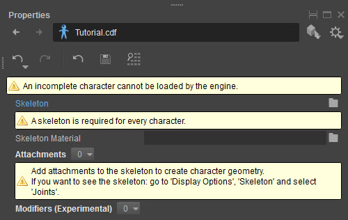
Далее double-нажмите на Папка кнопка рядом с Скелет, затем выберите скелет, т. е. объекты/персонажи/человека/универсальный/skeleton_player_generic.chr, и нажмите Открыть загрузить скелет. Это автоматически назначит скелет CDF. Чтобы сделать скелет видимым, нажмите на Параметры отображения (кнопка вверху области просмотра) и откройте раздел Скелет затем активируйте флажок Суставы. Затем вы должны увидеть следующее изображение в окне просмотра, и на этом этапе у вас есть CDF с пустым скелетом и без вложений (однако на этом скелете уже можно воспроизводить анимацию).
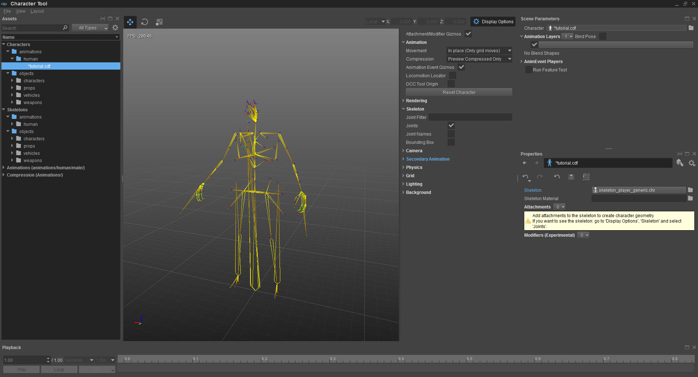
Настройка разъемов для крепления
Если вы хотите что-то прикрепить к персонажу, то первым делом нужно создать «пустой» сокет.
Шаг 1. Создание сокета
Перейдите на панель свойств CDF (нажмите на имя CDF рядом с персонажем в параметрах сцены), затем нажмите кнопку рядом с «Вложения» и выберите Вставить. Это создает безымянный пустой сокет. Введите произвольное имя сокета, например «fullbodymesh».
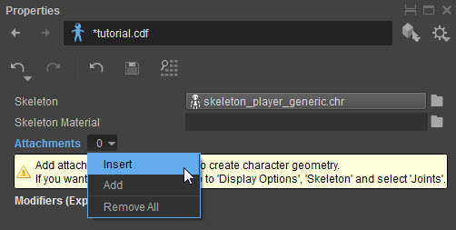
Шаг 2. Установка типа сокета
Пустой сокет по сути является заполнителем для различных типов вложений и в своей самой простой форме просто содержит имя, флаги и тип розетки. Однако более сложные гнезда (например, соединения суставов и лиц) также имеют положение гнезда, которое перемещается при анимации персонажа. Пустые сокеты часто используются игровым кодом для подключения и обработки типичных игровых объектов, таких как; объекты, свет и эффекты частиц. Эти объекты создаются кодом игры и прикрепляются к сокетам, например, чтобы дать персонажу различное оружие во время игры. Вы можете визуализировать все пустые сокеты на модели с помощью консольной команды ca_DrawEmptyAttachments=1. В Character Tool вы также можете визуализировать все доступные гнезда персонажа, если используете DisplayOptions и активируйте флажок Вложение/ModifierGizmo. Однако большинство сокетов обычно не пустуют. В Character Tool вы можете использовать их для подключения различных сеток (скинов и static), прокси-серверов столкновений, а также применять к ним физическое моделирование.
Вложения со скинами: Только что созданный сокет по умолчанию имеет тип Совместное крепление. Нажмите на сокет и измените тип на Крепление кожи. Затем перейдите к геометрия и нажмите на Папка кнопка. Откроется диалоговое окно, показывающее все файлы *.skin в папке. Выберите «objects/characters/human/sdk_attachment_tutorial/rebels/bodymesh.skin» и нажмите Открыть. Это загрузит файл скина и прикрепит его к скелету. Каждое вложение со скином также может иметь свой собственный набор фигур перехода, хранящихся в том же файле, но у них CANNOT есть свой собственный набор совместных анимаций. Чтобы анимировать вложение со шкурой и деформировать его сетку, мы всегда используем позу скелета базового персонажа.
Вы должны увидеть следующее изображение в окне просмотра. В этом случае все суставы файла скина идентичны базовому скелету.
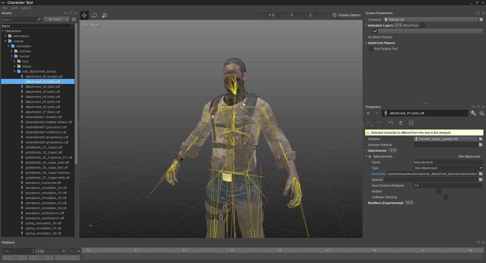
Скелетные расширения создаются таким же образом. Перейдите на панель свойств CDF и создайте новый сокет для вложения скина (как описано ранее). Назовите новое вложение "GlottSkull". Затем перейдите в геометрию и нажмите на значок Папка кнопка и выберите «objects/characters/human/sdk_attachment_tutorial/glottskull/glottskull.skin» и нажмите Открыть. Это загрузит новый файл скина и прикрепит его к скелету. Однако в этом случае "GlottSkull.skin" имеет множество дополнительных суставов, которых нет в базовом скелете.on, поэтому, чтобы прикрепить его, просто добавьте новые суставы к базовому скелету. В файле журнала вы можете увидеть строку предупреждения для каждого нового сустава, добавленного в скелет.
[Предупреждение] Расширение скелета, поскольку совместное имя (hairstrand01_chain01) SKIN (objects/characters/human/sdk_attachment_tutorial/glottskull/glottskull.skin) не найдено в SKEL:objects/characters/human/generic/skeleton_player_generic.chr
Предупреждение выше появляется только в Character Tool и его можно игнорировать. Он предназначен для того, чтобы просто сообщить пользователю, создающему CDF, что для некоторых вложений скина требуется расширение скелета. В окне просмотра должно появиться следующее изображение.
Глоттскалл прилагается:
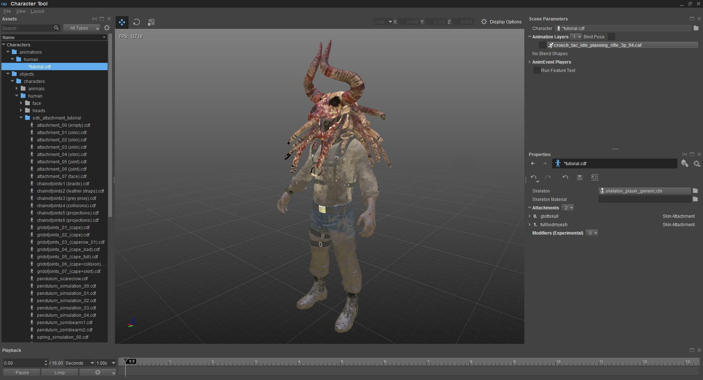
С точки зрения пользователя расширение-скелет идентично обычному прикреплению скина (дополнительные параметры не требуются). Таким образом, в случае, когда требуется другой скелет головы (но с использованием того же тела), тогда можно прикрепить и другие элементы, такие как кусочки ткани, то есть накидки и юбки, шлемы и прически, и в то же время - это можно увидеть в файле. attachment_03 (скин).cdf.
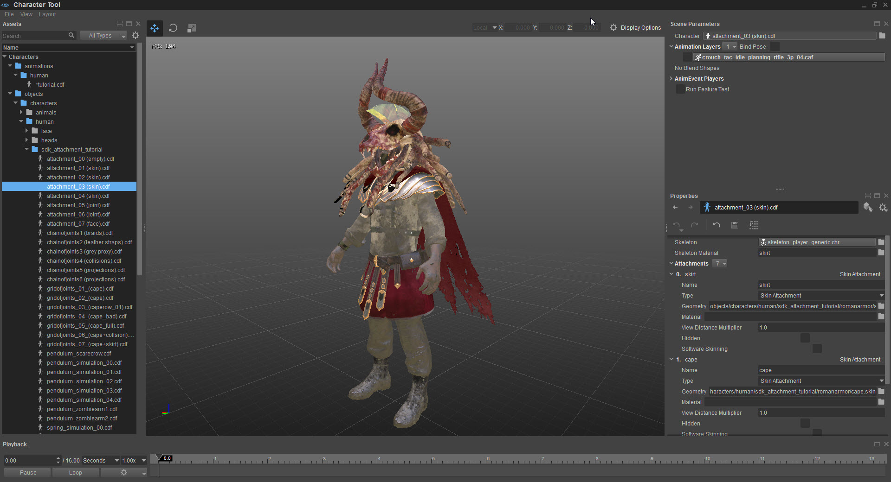
Это означает, что у вас может быть минималистичный базовый скелет, который можно расширить с помощью скелета скининга произвольной сложности. Более того, расширение базового скелета различными скинами происходит во время загрузки (при использовании в игре), и только в Character Tool его можно расширять во время выполнения во время воспроизведения анимации.
С помощью скелетных расширений вы можете добавлять только новые дочерние суставы к базовому скелету; однако вы не можете изменить существующую иерархию базового скелета. Это означает, что вы не можете удалить суставы из иерархии, не можете изменить расположение существующих суставов и не можете превратить позвоночник с 4 суставами в позвоночник с 5 суставами.
- Чтобы гарантировать правильную анимацию расширенных суставов скелета скиннинга с базовым скелетом, оба скелета должны иметь хотя бы один общий сустав. Так, например, если вы хотите прикрепить юбку, вам понадобится всего лишь один общий сустав (обычно в области таза) между двумя соответствующими скелетами.
- Для некоторых креплений может потребоваться несколько перекрывающихся соединений. Например, если вы хотите прикрепить новую голову, требующую правильной очистки кожи в области шеи и плеч, вам понадобится шейный сустав и, возможно, два других сустава на плечах, которые являются общими для базового скелета и кожи головы.
Система может справиться даже с ситуацией, когда оба скелета не имеют ни одного общего сустава — в этом случае система создает новую ветвь от корня. Это показано с помощью оленя на снимке экрана ниже. Хотите узнать больше? Тогда взгляните на файл attachment_04 (скин).cdf. Вы также можете анимировать оленя независимо от человека, воспроизведя анимацию (частичное тело) на более высоком уровне.
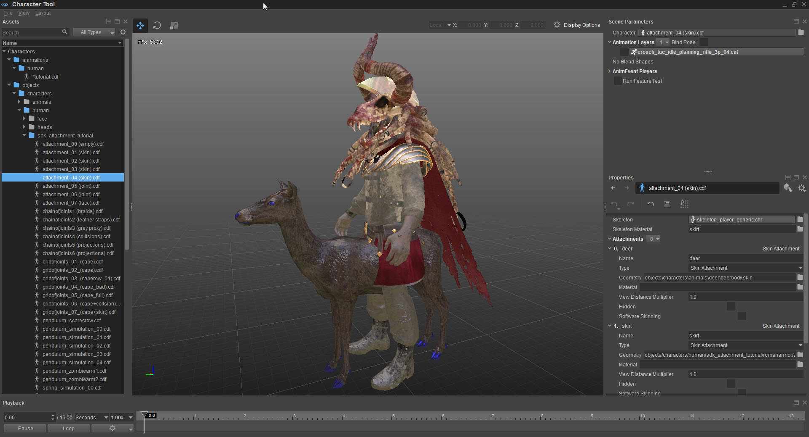
Возможно, это несколько необычное приложение, но это отличный пример гибкости и красоты системы. Это означает, что вам не нужно заранее знать тип сустава(ов), который вам может понадобиться (в базовом скелете), и вам не нужно носить с собой дополнительные суставы на тот случай, если они вам понадобятся, вместо этого система позволяет вам добавлять новые суставы по желанию и всякий раз, когда они потребуются.
Совместные приложения: Вернитесь к изначально созданному CDF, т.е. attachment_01.cdf. Сделайте это, double щелкнув по нему в дереве слева. На панели свойств нажмите кнопку рядом с «Вложения» и выберите «Вложения». Вставить, это создаст новый пустой сокет (без имени). Введите произвольное имя, например «оружие» и установите тип. Совместное крепление. Затем перейдите к Совместное и нажмите на кнопку рядом с ним:
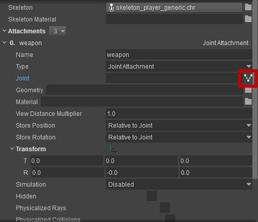
Откроется окно, показывающее все соединения в иерархии. Наконец, выберите совместное имя weapon_bone и нажмите кнопку OK кнопка. Это создаст гнездо рядом с правой рукой персонажа. Далее переходим в геометрию и нажимаем Папка кнопка и выберите объекты/оружие/винтовку/rifle_tp.cgf, чтобы назначить винтовку сокету. Только что созданное гнездо (и прикрепленная к нему винтовка) идеально совпадают с weapon_bone совместный. Это связано с тем, что все оружие смоделировано таким образом, что позволяет автоматически прикреплять его к weapon_bone — это облегчает дополнительную работу. Персонаж с винтовкой должен выглядеть так, как показано на скриншоте ниже.
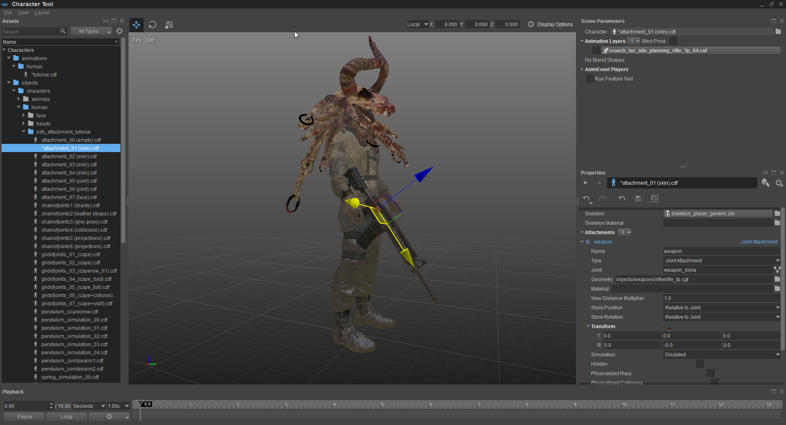
Однако, как мы увидим в следующем примере, не все прикрепленные объекты идеально выровнены по суставу.
В этом случае создайте новое гнездо для крепления типа «соединение», назовите его «снайперский прицел» и выберите соединение. Bip01 L Бедро. Это создаст гнездо на левом бедре персонажа.
Далее переходим в геометрию и нажимаем на кнопку Папка кнопка и выберите «objects/weapons/attachments/sniper/sniper_scope_a_tp.cgf», чтобы назначить сокету CGF. Только что созданный сокет теперь выровнен по суставу. Bip01 L Бедро рендеринг снайперского прицела внутри левой ноги персонажа (изображение слева на скриншотах ниже).
Изменение местоположения Bip01 L Бедро невозможно, поскольку это часть основной иерархии и добавление нового сустава занимает слишком много времени, однако мы можем отодвинуть гнездо от ножки. Сначала нажмите на Переместить кнопка:
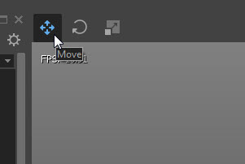
Затем перетащите гизмо, чтобы сдвинуть его немного вправо. Однако прицел имеет горизонтальную ориентацию, поэтому нажмите на значок Поворот и поверните прицел вокруг осей Z и Y, чтобы получить правильную ориентацию. После настройки снайперский прицел должен быть прикреплен к персонажу:
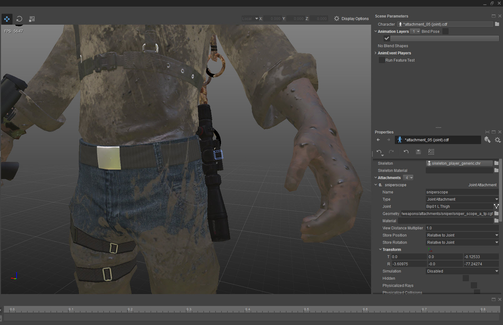
Перемещение и вращение вложений также можно выполнить с помощью параметров «Преобразование» в меню «Трансформировать». Свойства вложения:
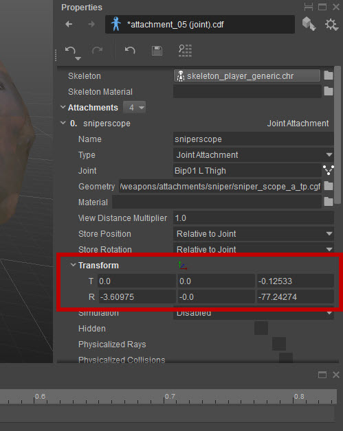
Вложения суставов хранятся относительно сустава и перемещаются вместе с ним при анимации скелета. На самом деле существует два способа сохранить это относительное местоположение в файле CDF: вы можете сохранить его Относительно сустава или Относительно персонажа. Также возможно сохранять вращение и положение в разных местах.
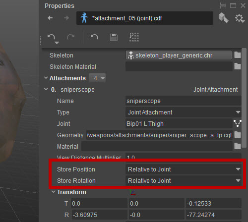
Оба режима хранения идентичны во время выполнения, поскольку мы конвертируем их в одно и то же пространство во время загрузки. Однако, используя Относительно сустава имеет то преимущество, что если пропорции скелета изменятся во время разработки, то вложение все равно сохранит то же относительное расположение. Если вы хотите идеально совместить раструб с стыком, то вам нужно выбрать Относительно сустава и установите все значения в полях положения и вращения на 0.
Лицевые вложения: Перейдите на панель свойств CDF, нажмите «Вложения» и выберите Вставить. Это создаст новый пустой сокет (без имени) в начале символа. Введите произвольное имя, например «facesocket», и установите тип. Насадка для лица. Это создаст новый сокет в (0,0,0) в пространстве символов. Обратите внимание, что в отличие от вложений суставов, вложения граней не связаны с суставом с уникальным именем, а скорее связаны с ближайшим треугольником на сетке, и этот треугольник может измениться при изменении сетки.
Использование инструмента перемещения и поворота позволяет переместить сокет в нужное место на сетке — рекомендуется поместить персонажа в Связанная поза во время этого процесса. Чтобы активировать Связанная поза функция, проверка Связанная поза на панели параметров сцены:
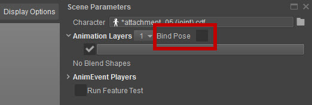
Когда вы перемещаете сокет с гизмо в пространстве символов, он автоматически подключается к ближайшему треугольнику, который он может найти на сетке. С ca_DrawAttachmentProjection=1 ближайший треугольник на сетке выделен белой проволочной рамкой — вы также можете увидеть отрезок от розетки до центра треугольника.
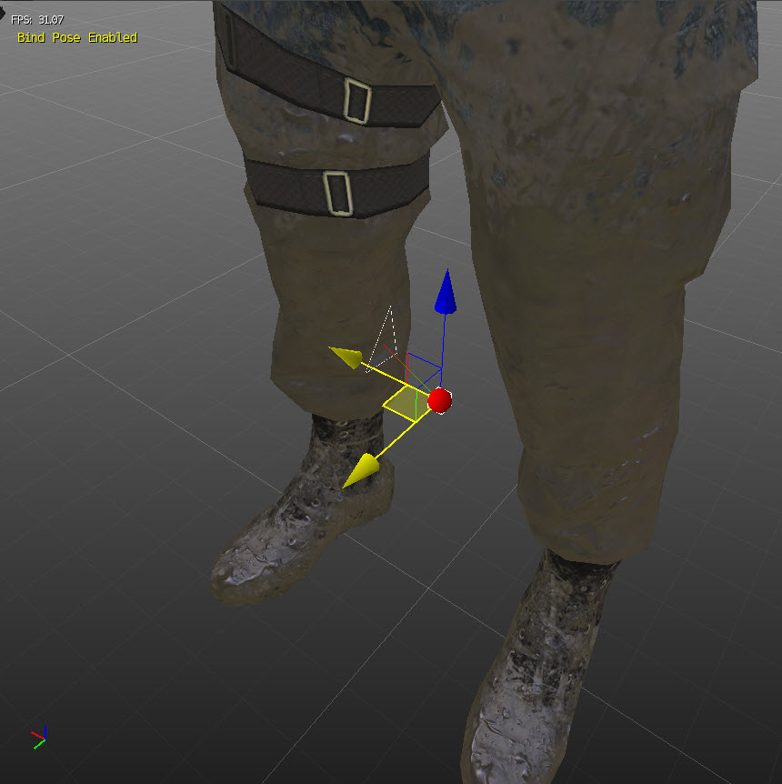
Насадки для лица идеально подходят для быстрых экспериментальных настроек, потому что на практике гораздо проще разместить насадку непосредственно на поверхности сетки. Типичная проблема с прикреплениями суставов заключается в том, что некоторым из них требуется специальный «вспомогательный сустав» в модели, а добавление этих суставов требует дополнительного времени и может быть выполнено только в том инструменте, в котором был создан исходный скелет. Однако прикрепленные лица могут создавать все пользователи Character Tool.
Еще одним преимуществом является то, что какими бы сложными ни были деформации, насадки всегда точно повторяют движения лица. Такое поведение чрезвычайно сложно имитировать с помощью суставных креплений, поскольку на треугольник со шкурой почти всегда влияют несколько суставов (до 12 суставов), и каждый сустав оказывает небольшое влияние на общее движение.
Также возможно изменить насадку лица на насадку сустава (и наоборот). Однако преобразование кожной насадки в суставную или лицевую насадку не имеет практического смысла.
Другие свойства вложения
Геометрия
Выбор геометрии заданного объекта. В случае прикрепления суставов и граней этот файл имеет формат *.CGF. В случае вложений скинов это файл *.SKIN.
Материал
По умолчанию каждая присоединенная геометрия содержит имя файла материала (*.MTL) в той же папке. Если такого файла материала не существует (в этом случае вы увидите красную текстуру ReplaceMe), вы можете использовать выбор материала, чтобы назначить файл материала вручную. Это также работает, если вы хотите перезаписать существующий материал. Примечание: Назначенный материал имеет приоритет над материалом по умолчанию в геометрии.
Флаги вложений
- Скрыто: Скрывает выбранное в данный момент вложение. Эту функцию можно установить по умолчанию и сохранить в файле, но обычно это функция времени выполнения.
- Физические лучи: Доступно только для шарнирных и лицевых насадок. Если этот объект имеет действительный физический прокси, то этот флажок включит обнаружение попаданий лучей.
- Физические столкновения: Доступно только для шарнирных и лицевых насадок. Если у этого объекта есть действительный физический прокси, этот флажок включит обнаружение столкновений в среде.
- Скинирование программного обеспечения: Доступно только для вложений кожи. Если этот флаг активирован, то меш будет обработан на CPU вместо GPU. Программное оформление оформления в настоящее время необходимо, если вы также хотите использовать формы смешивания или хотите, чтобы касательные кадры пересчитывались в каждом кадре.
Использование сокетов для вторичной анимации
Система крепления поддерживает имитацию движения насадок для суставов и лица. Этот тип анимации всегда является реакцией на предыдущее (первичное) движение, поэтому его называют вторичной анимацией.
Его можно использовать для улучшения движения прикрепленных static объектов (например, ножен для мечей, карманов, оружия и т. д.).
- Его можно использовать для непосредственного моделирования частей сетки (например, моделирования жира и мышц в человеческом теле).
- Его можно использовать для создания сложных наборов веревок для имитации волос, щупалец, кожаных ремней, цепей, ожерелий и всех других типов свободно свисающих частей персонажа. Веревки могут быть более сложными, чем это было возможно с CryPhysics, т. е. они могут иметь ветвящиеся струны и разные физические свойства для каждого звена. В более поздней версии SDK будет показано, как использовать эту систему даже для тканевых настроек (т. е. маятниковой ткани).
Для первого теста создайте гнездо для прикрепления (как описано в разделе «Настройка гнезд для прикрепления»). Назовите его «пружина», затем выберите тип. Совместное крепление и связать его с суставом с именем Бип01 Шея. Затем вставьте CGF в розетку, например.ple объекты\персонажи\человек\вложения\тыква\pumpkin.cgf. pumpkin.cgf теперь находится в том же положении, что и голова персонажа, поэтому нажмите на Переместить инструмент и переместите тыкву на 1 метр перед персонажем — это улучшит визуализацию. Затем поверните тыкву на 90 градусов вокруг оси Y штуковины. В окне просмотра вы должны увидеть следующую конфигурацию:
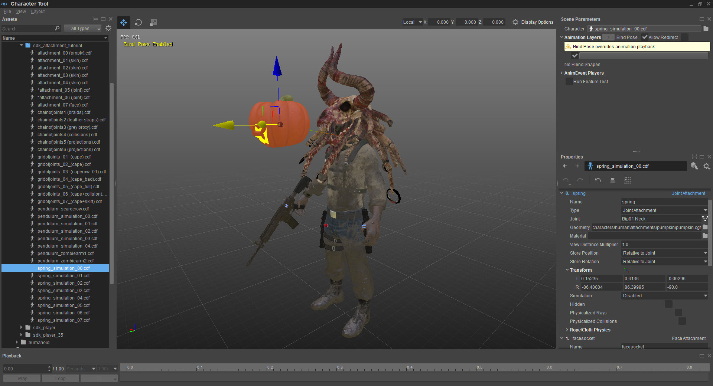
Если вы воспроизведете анимацию персонажа, то увидите, что «pumpkin.cgf» всегда сохраняет одинаковое относительное расстояние и ориентацию относительно шейного сустава. Теперь мы готовы применить динамическое моделирование к этому сокету.
Моделирование движений в играх обычно представляет собой лишь грубое приближение к реальной физике слова. В нашем случае свойства Пружины и Пендула используются для аппроксимации физического движения объектов, прикрепленных к персонажам. Чтобы активировать симуляцию сокета, откройте список под Моделирование и выберите из Pendulum_Cone, Pendulum_Hinge, Pendulum_HalfCone, или Spring_Ellipsoid:
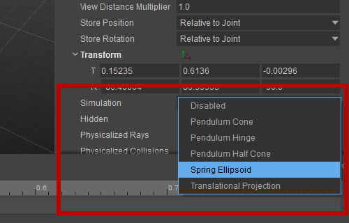
Первые три записи с префиксом «Маятник» активируют симуляцию маятника. Суффиксы «Конус», «HingePlane» и «HalfCone» представляют собой разные типы лагерей для ограничения движения маятника. Запись Spring_Ellipsoid активирует моделирование пружины, ограниченное формой эллипсоида. Последняя запись Translational_Projection на самом деле имеет мало общего с моделированием и больше связано с реакцией на столкновение. Каждый из вариантов рассмотрен ниже.
Настройка весеннего симулятора
В нашем случае пружина определяется как частица массы, соединенная с упругим канатом. Концепция очень похожа на банджи-веревку. После выбора Spring_Ellipsoid тыква упадет на 0,5 метра вниз. На панели показаны все параметры, доступные для настройки физики пружины в гнезде.
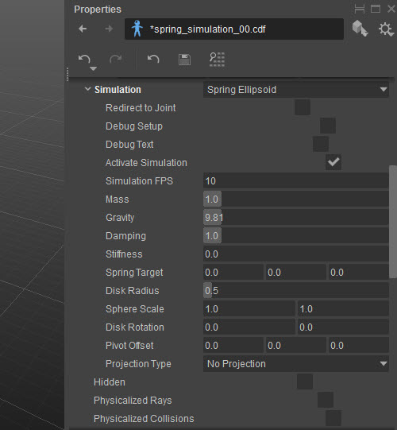
Настройка отладки
Если вы активируете этот флажок, он отобразит зеленую сферическую форму, разделенную диском посередине. Это ограничивающий объем моделируемой частицы, который по умолчанию имеет форму сферы. Опорная точка тыквы находится внизу сферы, и если на персонаже воспроизводится анимация, вы увидите, что смоделированная частица (это только ось тыквы) может перемещаться только внутри ограничивающего объема. В нашем случае смоделированная частица представлена синей сферой, но на самом деле у частицы вообще нет радиуса.
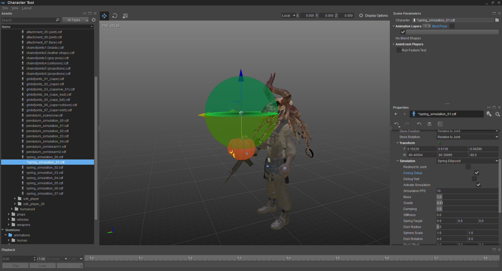
Текст отладки
Этот флажок активирует дополнительную информацию об отладке, например время обновления и количество подразделений временного шага. Если вы перенаправите симуляцию на сустав (эта функция будет рассмотрена позже), она также покажет все дочерние элементы этого сустава, на которых влияет симуляция.
Активировать симуляцию
Этот флажок активирует моделирование пружин и маятника, по умолчанию оно всегда активировано. Если этот параметр отключен, прикрепленный объект отображается в позе по умолчанию.
Моделирование FPS
Этот ползунок определяет частоту кадров, с которой будет обновляться физическая симуляция. Значения, установленные на ползунке, могут быть выше, чем частота кадров средства рендеринга.
Если вы выберете значение по умолчанию 10 и частота кадров рендеринга выше, то на каждый кадр рендеринга будет происходить как минимум одно физическое обновление. Кадры никогда не пропускаются.
Если вы выберете значение, превышающее частоту кадров, то физическая система автоматически разделит временной шаг и выполнит несколько шагов моделирования между кадрами рендеринга. Очевидно, что более высокая симуляция FPS потребует больше времени CPU, поэтому используйте это значение с осторожностью. Моделирование с высокими значениями пружин также требует более высокой частоты обновления моделирования, чтобы гарантировать точное и стабильное моделирование.
Физические параметры пружины: Для управления физическими параметрами используются четыре характеристики: масса, гравитация, демпфирование жесткость. Всегда существует противобаланс между массой, гравитацией и жесткостью, следовательно, если жесткость слишком мала, гравитация будет тянуть объект вниз. Аналогичным образом, если жесткость увеличивается, объект будет тяготеть к целевому значению жесткости. Симуляция пружины создает новый сдвиг в каждом кадре, который перемещает прикрепленный объект относительно сокета прикрепления. Примечание. Моделирование пружины не влияет на ориентацию прикрепленного объекта.
- Масса: Определяет массу частицы, соединенной с пружиной. Поскольку long жесткость равна 0 или очень мала, масса просто будет тянуть частицу вниз, пока она не коснется границ эллипсоида.
- Гравитация: Значение по умолчанию 9,81 м/сек. — стандартная скорость ускорения падающих объектов под действием силы тяжести, действующей на Землю. В вакууме (Демпфирование = 0) свободно падающий объект увеличивает свою скорость на 9,81 м/сек за каждую секунду своего падения, и поэтому все объекты (независимо от их массы), упавшие с одинаковой высоты, упадут на землю одновременно.
- Демпфирование: Это значение можно использовать для моделирования силы, зависящие от скорости, например сопротивление воздуха. Чем быстрее движется объект, тем с большим трением воздуха он сталкивается. Это означает, что сила трения замедляет объект со скоростью, пропорциональной скорости. В случае более высоких значений демпфирования колеблющиеся объекты будут быстрее останавливаться. При Damping=0 колебания пружины будут продолжаться вечно.
Жесткость: Это значение можно использовать для моделирования силы, зависящие от положения, характерные для пружин. Чем больше вы растягиваете пружину, тем сильнее она пытается вернуться в расслабленное положение. Этот параметр также можно назвать натяжением пружины, и его значение находится в диапазоне 0–999. Значение 0 вообще не имеет жесткости, и объект, подключенный к пружине, будет свисать вниз, когда придет в состояние покоя. Чем выше значение, тем быстрее частица вибрирует и тяготеет к Весенняя цель. Важно отметить, что жесткость — это сила, противодействующая гравитации и массе, и более высокая масса всегда будет тянуть объект вниз. Очень высокие значения жесткости обычно вызывают несколько колебаний за один временной интервал.
Чтобы избежать нестабильности, может потребоваться увеличить параметр Simulation FPS.- Весенняя цель: Параметры весенняя мишень и жесткость тесно связаны. Это положение x,y,z относительно сокета. По умолчанию это (0,0,0) и оно напрямую совпадает с сокетом. Если жесткость равна 0, то целевая пружина не будет иметь никакого эффекта. Однако при любом другом значении объект притягивается целевой пружиной, которая может находиться за пределами ограничивающего объема. Кроме того, пружинная мишень является силой, противодействующей гравитации и массе, и хотя сила тяжести всегда тянет объект вниз к центру земли, пружинная мишень может притянуть объект в любое другое место.
Различные тестовые установки для пружинных тренажеров вы можете найти в файлах. spring_simulation_02.cdf-spring_simulation_05.cdf.
Определение ограничивающего объема: Поскольку long движение частицы является неограниченным (что означает, что движение зависит только от массы, гравитации, жесткости и демпфирования), то теоретически она может колебаться в любом направлении и даже перемещаться далеко от начала координат (= гнезда). Однако это может создать некоторые нежелательные эффекты, поэтому для ограничения движения частицы используется специальный ограничивающий объем, который также можно изменить с помощью трех параметров. Примечание: Чтобы увидеть изменение формы, необходимо активировать настройку отладки.
Радиус диска: Ползунок радиуса можно использовать для изменения радиуса диска в середине ограничивающего объема.
- Масштаб сферы: Есть два разных ползунка, которые позволяют независимо масштабировать обе полусферы ограничивающего объема. Эти значения масштаба относятся к радиусу диска, что означает, что его можно деформировать в эллипсоид, яйцо или половина-сфера с одной стороной совершенно плоской. Также возможно создать диск если обе стороны масштабируются до нуля или для создания сегмент линии если уменьшить радиус диска и добавить к обеим полусферам крайний масштаб.
- Вращение диска: с помощью этих двух ползунков можно выполнять повороты по рысканию и тангажу относительно системы координат гнезда. Первый ползунок вращается вокруг оси X, а второй — вокруг оси Z сокета. Примечание: Инструмент вращения диска может вращать ограничивающий объем. независимо от гнезда, при этом инструмент вращения вращает 3 предмета одновременно; гнездо, геометрия и ограничивающий объем.
Вот несколько примеров различных фигур, которые можно создать с помощью одного ограничивающего объема:
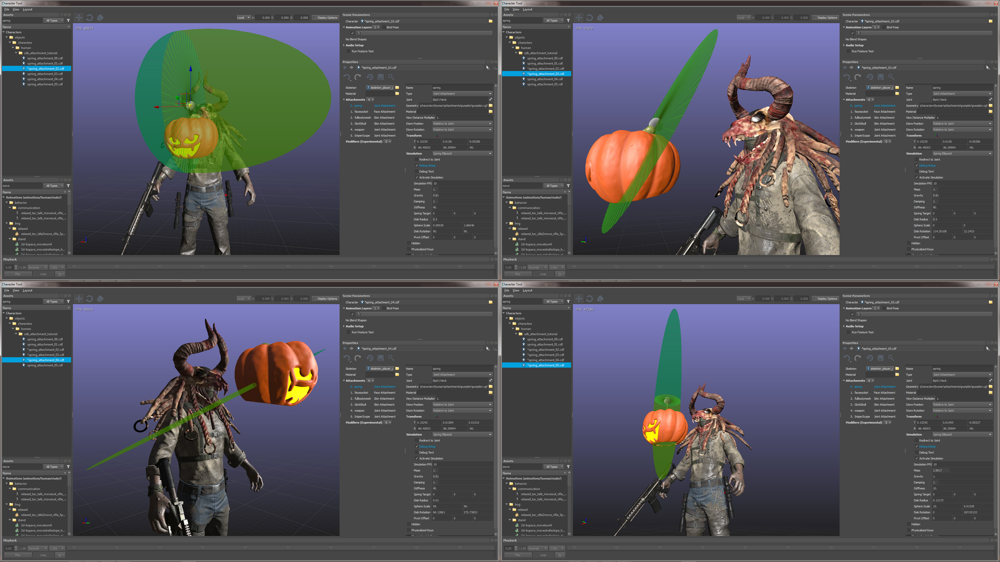
По часовой стрелке: яйцо, плоский диск в 3D-пространстве, эллипсоид, отрезок (эллипсоид с очень малым радиусом диска и масштабированными сторонами).
Смещение поворота
Pivot Offset позволяет смещать местоположение прикрепленного объекта рендеринга. По сути, это просто визуальная функция, которая не влияет на саму симуляцию, а только добавляет смещение к прикрепленному объекту на этапе рендеринга. По умолчанию это ось модели (смещение=0,0,0), и эти три значения представляют собой смещение по осям x,y,z, которое перемещает отображаемую геометрию в направлении осей сокета. Например, смещение (0,0,1) сместит геометрию на 1 м в направлении оси Z, и изменение смещения не меняет положение сокета, оно только отображает прикрепленную геометрию в другом месте, которое также может находиться за пределами ограничивающего объема.
Если Перенаправление на сустав включен, то смещение поворота изменит расположение сустава и всех его дочерних элементов. Это обсуждается в примере ниже.
Перенаправление на сустав
Если вы активируете этот флажок, то относительное движение моделируемой частицы передается суставу, к которому она прикреплена. Другими словами, мы просто добавляем расстояние между частицей и суставом. В случае моделирования пружины мы меняем только перемещение сустава, что приведет к перемещению всех вершин, являющихся частью скин-меша и взвешенных по отношению к суставу.
В предыдущих версиях SDK существовало правило, согласно которому имя вложения должно было совпадать с именем сустава, это делало невозможным иметь более одного моделируемого вложения для каждого сустава. Преимущество Перенаправление на сустав Флажок заключается в том, что вы можете прикрепить к одному суставу несколько моделируемых сокетов и выполнять их один за другим для создания более сложных процедурных эффектов.
Вот несколько простых примеров:
Spring_Simulation_06.cdf: Выберите пружинную насадку и нажмите кнопку Перенаправление на сустав установите флажок, чтобы увидеть, что происходит с головой. Вместо тыквы теперь подпрыгивает голова в пределах ограничивающего объема. В этом случае расположение гнезда не имеет особого значения для перемещения шейки, потому что мы применяем только относительное расстояние от гнезда до моделируемой пружины и шарнира шейки (хотя моделирование по-прежнему происходит в месте расположения гнезда).
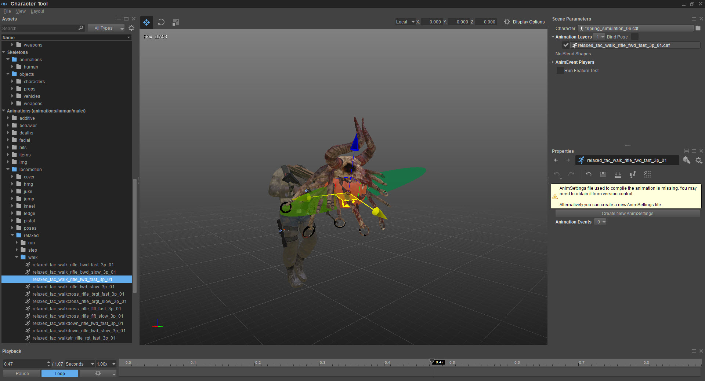
Spring_Simulation_07.cdf: Если вы измените Смещение поворота пока Перенаправление на сустав включен, то он будет применять смещение к положению сустава, к которому он прикреплен. На снимке экрана ниже было изменено смещение по оси Z и создано перемещение шеи по оси Z штуковины.
Примечание: Применение этого смещения изменяет NOT положение сокета, ограничивающего объема или гизмо. Однако это оказывает влияние на все последующие суставы и гнезда, которые являются дочерними элементами транслируемого сустава.
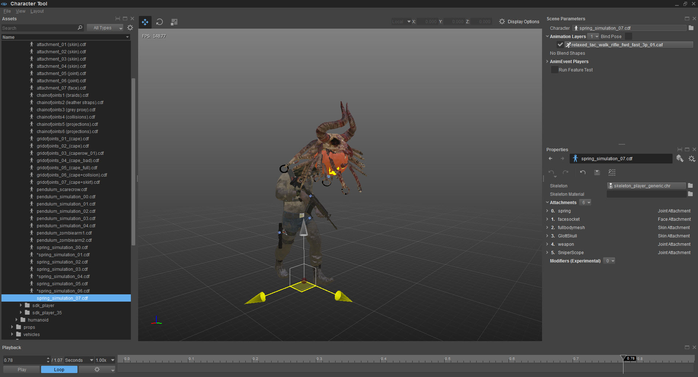
Настройка симулятора маятника
Устройство имитатора маятника аналогично имитатору пружины; однако есть различия, и физические свойства маятника понять немного сложнее.
Загрузить pendulum_simulation_00.cdf, у него есть суставное гнездо на левой ноге и лицевое гнездо на правой ноге. В обоих разъемах снайпер scope.cgf прилагается.
Чтобы активировать симуляцию сокета, щелкните имя сокета. маятник и рядом, чтобы выбрать Pendulum_Cone. Это активирует полную панель, показывающую все физические свойства маятника. Если вы нажмете на Настройка отладки вы должны увидеть следующую картинку (снимок экрана ниже).
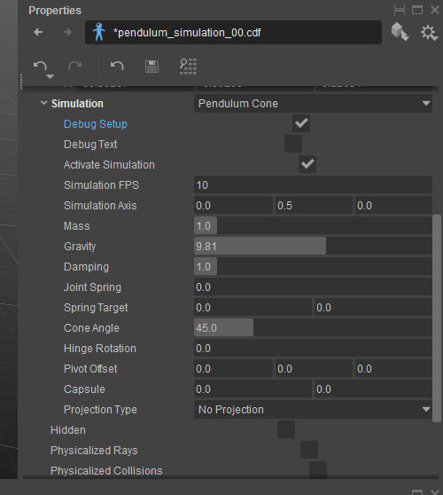
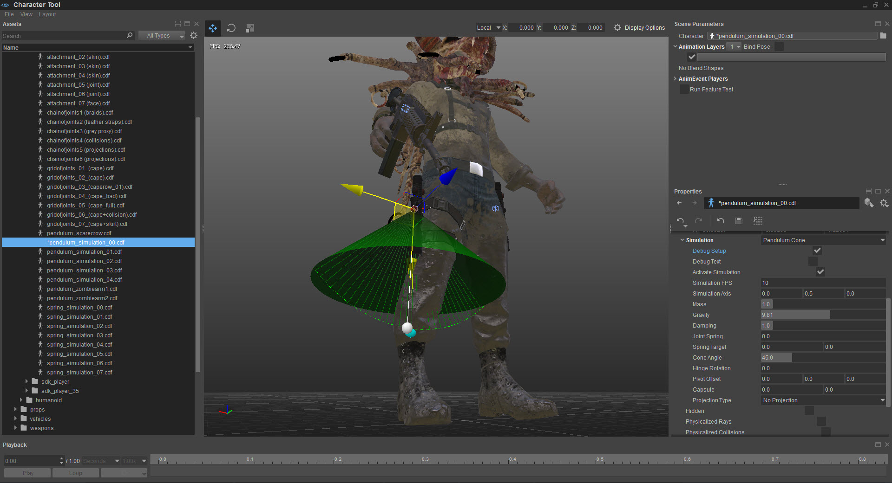
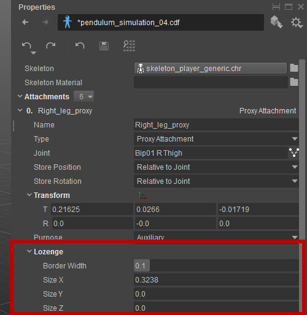
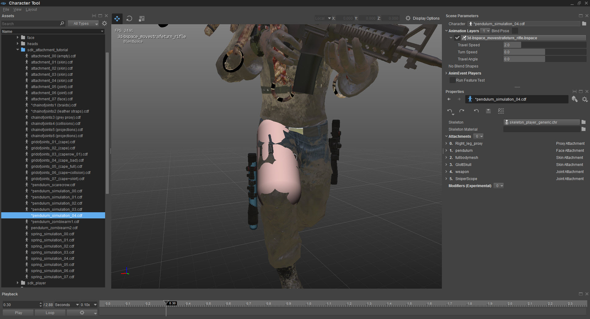
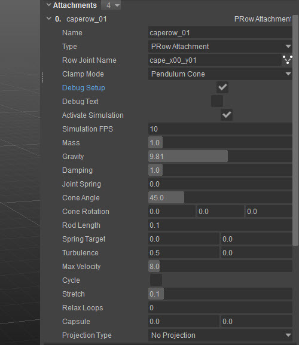
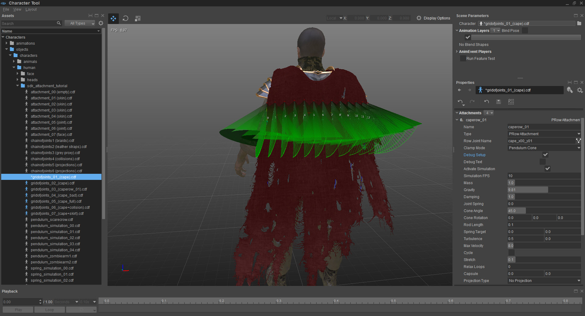
Это все, что вам нужно сделать, чтобы получить физизированную розетку с имитатором маятника для прицела, который неплотно соединен с правой ногой и может болтаться. Если вы проиграете анимацию, то увидите, что она действительно реагирует на движение.
Физические параметры маятника
Маятник – это Боб (с массой), соединенный с фиксированный стержень который связан с сферический шарнир к гнезду крепления. В свободном состоянии он будет раскачиваться вперед и назад в любом направлении, пока сопротивление воздуха или другая сила не замедлит его. Движение зависит от физических параметров, таких как; масса, гравитация, демпфирование и жесткость. Качание маятника создает новая ориентация для каждого кадра, который используется для изменения ориентации объекта вложения.
- Ось моделирования: Это вектор, то есть направление и длина, и он определяет стержень маятника по умолчанию. Это также сегмент между гнездом и бобом и центр конуса, который не перемещается. Направление оси моделирования зависит от ориентации сокета и имеет значение по умолчанию (0,0.5,0), что означает, что оно указывает в направлении оси Y. Эта длина (стержня) оказывает большое влияние на амплитуду маятника: чем длиннее стержень, тем больше времени потребуется маятнику на колебания вперед и назад. Длина стержня является жестким ограничением, которое гарантирует, что боб всегда будет сохранять фиксированное расстояние до гнезда.
- Масса: Определяет массу качания маятника и long, как совместная пружина равен 0, то масса не влияет на период колебаний. Движущей силой маятника является гравитация, следовательно, если масса маятника в два раза больше, то сила тяжести тянет в два раза сильнее. Сила, необходимая для перемещения массы, и сила, создаваемая гравитацией, определяются массой объекта, поэтому они компенсируют друг друга, и поэтому эффекта нет. Следовательно, в случае с маятником вес боба не влияет на его движение.
- Гравитация: Значение по умолчанию 9,81 м/сек. — стандартное ускорение падающих объектов под действием силы тяжести, действующей на Землю. Хотя масса боба не влияет на колебания маятника, сила тяжести влияет. Например, на Луне, где гравитация g=9,81/6, боб не только весил бы меньше, но и качался бы медленнее.
- Демпфирование: Это значение можно использовать для моделирования силы, зависящие от скорости, например сопротивление воздуха. Таким образом, чем быстрее движется объект, тем с большим трением воздуха он сталкивается. Это означает, что сила трения замедляет объект со скоростью, пропорциональной скорости, следовательно, более высокие значения демпфирования заставят колеблющиеся объекты быстрее остановиться. Если вы используете Damping=0, то теоретически раскачивание маятника будет продолжаться вечно, однако на практике рассеяние энергии рано или поздно замедлит его.
Совместная весна: Это значение можно использовать для моделирования силы, зависящие от положения, и представляет собой значение от 0 до 999, применяемое к сферическому суставу. Чем дальше маятник отклоняется от оси весенняя мишень, то тем сильнее он пытается вернуться. Значение 0 не оказывает пружинящего эффекта, поэтому в состоянии покоя маятник будет висеть вниз. Чем выше значение, тем быстрее боб колеблется и притягивается к Весенняя цель, который может указывать в любом направлении. Важно отметить, что натяжение пружины является силой, противодействующей массе и гравитации, и что более высокая масса всегда будет тянуть боб вниз.
Шарнирная пружина с высоким значением может совершать несколько колебаний за один временной интервал, поэтому во избежание нестабильности может потребоваться увеличить Моделирование FPS.- Весенняя цель: Параметры весенняя мишень и совместная пружина тесно связаны. Кроме того, целью пружины является ось относительно оси моделирования и по умолчанию идентична оси моделирования. Кроме того, в распоряжении пользователя имеются две плоскости вращения, которые позволяют целевой оси пружины вращаться вокруг оси моделирования и, таким образом, позволяют достичь любого положения как внутри, так и снаружи конуса, полуконуса или шарнирной плоскости. Если шарнирная пружина равна 0, то целевая пружина не будет иметь никакого эффекта. Однако чем выше значение, используемое для шарнирной пружины, тем большее притяжение будет получать стержень от цели пружины. Кроме того, пружинная мишень является противодействующей силой гравитации, и хотя сила тяжести всегда тянет стержень маятника вниз, ось пружинной мишени может притягивать стержень маятника и в любом другом направлении. Например, если мы повернем маятник и увеличим значение шарнирной пружины, то мы сможем создать перевернутый маятник.
Определение ограничивающего объема: Поскольку long движение маятника является неограниченным (что означает, что движение зависит только от массы, гравитации, шарнирной пружины и демпфирования), то он может колебаться в любом направлении и даже совершать 360 оборотов вокруг начала координат (= гнезда). Итак, чтобы ограничить движение стержня маятника, мы используем три типа ограничивающего объема. Если вы активируете флажок Настройка отладки на нем изображен конус, полуконус или шарнирная плоскость. Это три ограничивающих объема маятника, и маятник может качаться только внутри границ этих геометрических фигур. Другими словами, движение ограничивается формой ограничивающего объема.
Угол конуса: Этот ползунок позволяет выбрать угол открытия конуса, полуконуса или шарнирной плоскости и по умолчанию установлен на 45 градусов. Доступен диапазон углов (0–179), а значения, превышающие 90 градусов, создают обратный конус.
Если выбран угол 179, то стержень может вращаться во всех направлениях.Вращение шарнира: Вращает шарнирную плоскость и полуконус вокруг стержня маятника. При этом вращается только тип зажима, а не сама розетка или прикрепленный объект.
Вращение конуса не влияет на симуляцию.
Некоторые примеры моделирования маятника
Pendulum_Simulation_01.cdf: На этом CDF показан свободно висящий прицел, ограниченный только конусом с углом 45 градусов. Основная проблема с этой установкой заключается в том, что прицел иногда зажимает правую ногу персонажа.
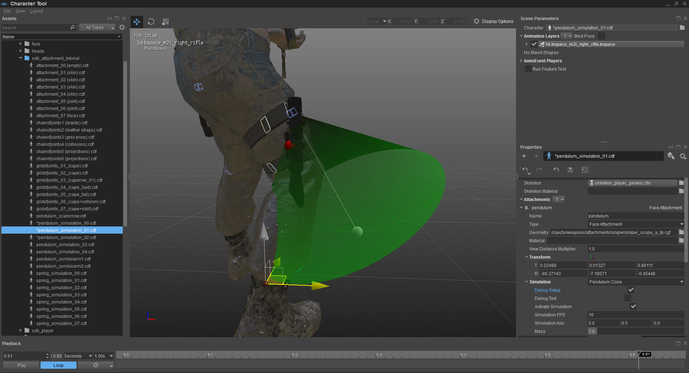
Pendulum_ Simulation_02.cdf: Один из способов избежать обрезки ноги персонажа — использовать шарнир-самолет вместо конуса. В этом случае прицел может скользить только по плоскости и зацепление за ногу персонажа невозможно. Однако недостатком этого варианта является то, что прицел теперь кажется чрезмерно ограниченным, поскольку он может двигаться только в одном направлении.
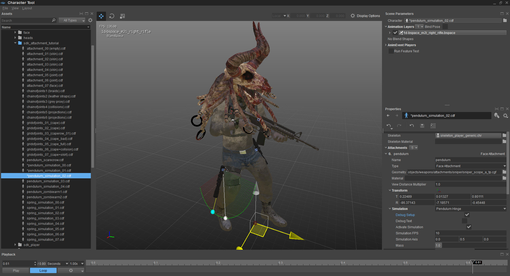
Pendulum_Simulation_03.cdf: Лучшим методом является использование полуконуса, у которого одна сторона совершенно плоская. Если плоская сторона ориентирована к телу, то прицел не может пересекать ногу персонажа. Это простое и эффективное решение для прикрепления свободно висящих объектов к телу и там, где вы не хотите использовать «более дорогие» столкновения.
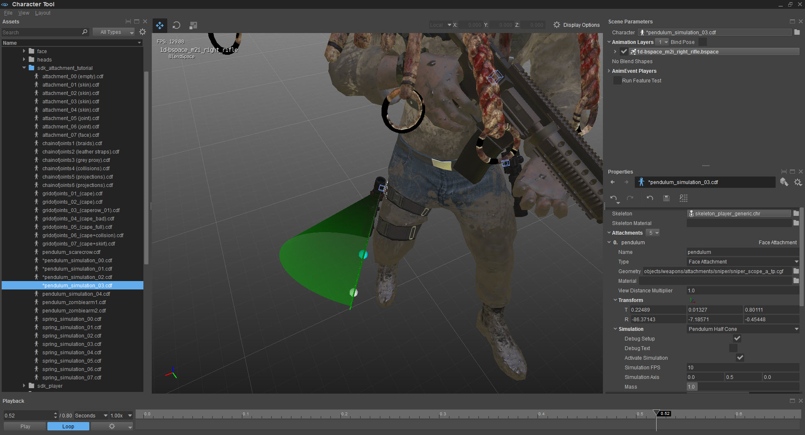
Pendulum_Simulation_04.cdf: Лучшее (и более реалистичное) решение — использовать реальные столкновения. В этом случае мы можем аппроксимировать прицел и правую верхнюю ножку капсулой, и во многих случаях это создает гораздо более реалистичный вид, чем можно получить с помощью шарнирной плоскости или полуконуса. На снимке экрана ниже движение сначала ограничивается капсулой на верхней части ноги, а затем конусом маятника. Мы объясним настройку прокси-серверов коллизий позже.
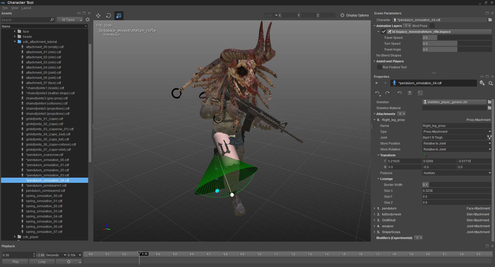
Перенаправление на сустав
Если вы активируете этот флажок, то моделируемое движение передается суставу, к которому он прикреплен, а это означает, что относительное движение маятника добавляется к суставу. Таким образом, поскольку long, поскольку смещение поворота равно (0,0,0), мы только изменяем ориентацию соединения, и это перемещает все вершины, которые являются частью скелетной сетки и имеют вес для этого соединения. Вот несколько простых примеров;
Pendulum_ZombieArm1.cdf: В этом примере мы создали травмированную или частично парализованную правую руку. Для суставов руки использовались три установки маятника; полуконус для ограничения движения плеча, шарнирная плоскость в локте для ограничения движения предплечья и конус на кисти. Поскольку значение для совместная пружина на всех трех маятниках очень низкая, симуляция полностью перезаписывает мокап-анимацию руки (которая все еще активна). Рука теперь совершенно безжизненно свисает с плеча; однако увеличение значения для совместная пружина частично повторно активирует исходную анимацию руки.
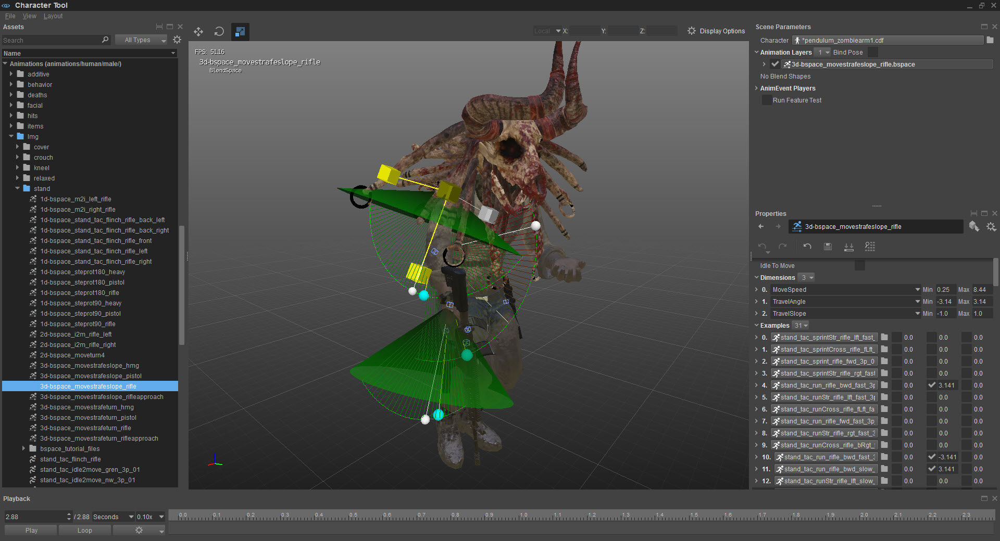
Pendulum_ZombieArm2.cdf: В этом примере обе руки парализованы и безжизненны, а к суставу позвоночника был применен «перевернутый маятник», чтобы заставить всю верхнюю часть тела реагировать на движение. При такой настройке любая анимация будет выглядеть как движение зомби.
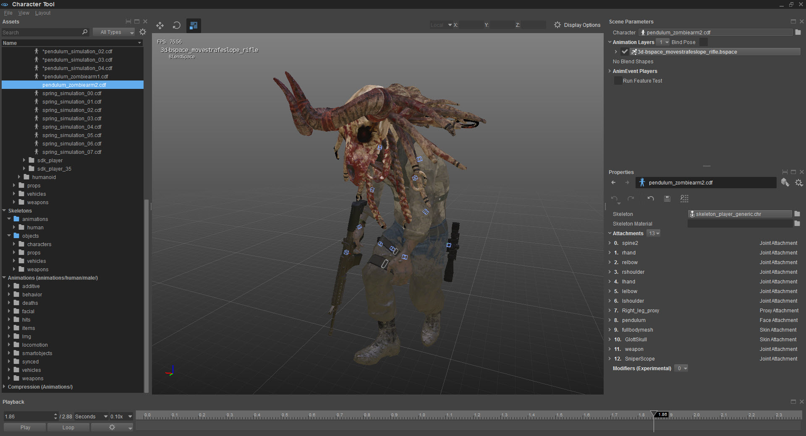
Смещение поворота
Эта особенность одинакова как для маятника, так и для пружин. Цель состоит в том, чтобы сместить прикрепленный объект или перенаправленное соединение и все его дочерние элементы. В pendulum_ScareCrow.cdf эта функция использовалась для перемещения обоих плечевых суставов на 30 см от тела. Штуцер, гнездо и полуконус маятника остаются на прежнем месте и сдвиг получает только сустав.
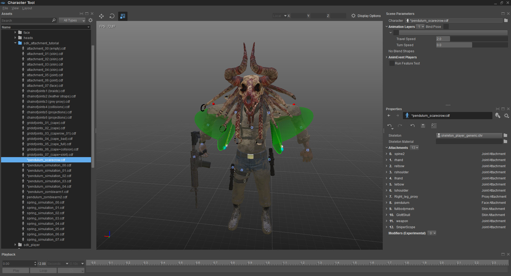
Моделирование цепочки связанных соединений
Цепочку маятников можно создать, прикрепив маятник к каждому звену, что, в свою очередь, позволяет нам создавать интересные эффекты, связывая моделируемые соединения. Следовательно, когда мы активируем симуляцию, каждый родительский сустав будет передавать свое движение дочерним элементам. В таком случае основное движение исходит не из анимации, а из предыдущей симуляции.
В предыдущем разделе мы создали аналогичный пример с «Руками зомби», а в следующем мы покажем, как использовать ту же концепцию для имитации волос и кожаных ремней с использованием обнаружения столкновений и реагирования.
Имитация волос
В ChainOfJoints1 (косы).cdf у нас есть модель с тремя косами, связанными с черепом. Две передние косы имеют 4 шарнира, задняя — 5 шарниров, а диапазон движения каждого звена косы ограничен конусом. Очевидная проблема с этой укладкой заключается в том, что при определенных движениях косы проходят прямо через тело — это особенно очевидно для передних кос. Позже мы покажем вам, как избежать этого при правильном использовании обнаружения столкновений.
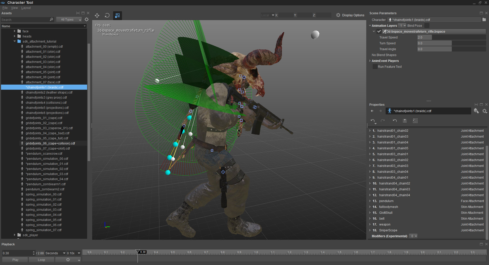
Имитация кожаных ремешков
В ChainOfJoints2 (кожаные ремни).cdf у нас есть ремень с 10 кожаными ремнями, где каждый кожаный ремень имеет 3 соединения, а диапазон движения каждого звена ремня ограничен шарнирной плоскостью. Очевидная проблема с этой настройкой заключается в том, что кожаные ремни спереди зажимают ноги персонажа во время воспроизведения анимации. Обратите внимание, что эта проблема возникает только с передними ремнями, для задних ремней такое защемление можно было предотвратить с помощью настройки шарнирной плоскости.
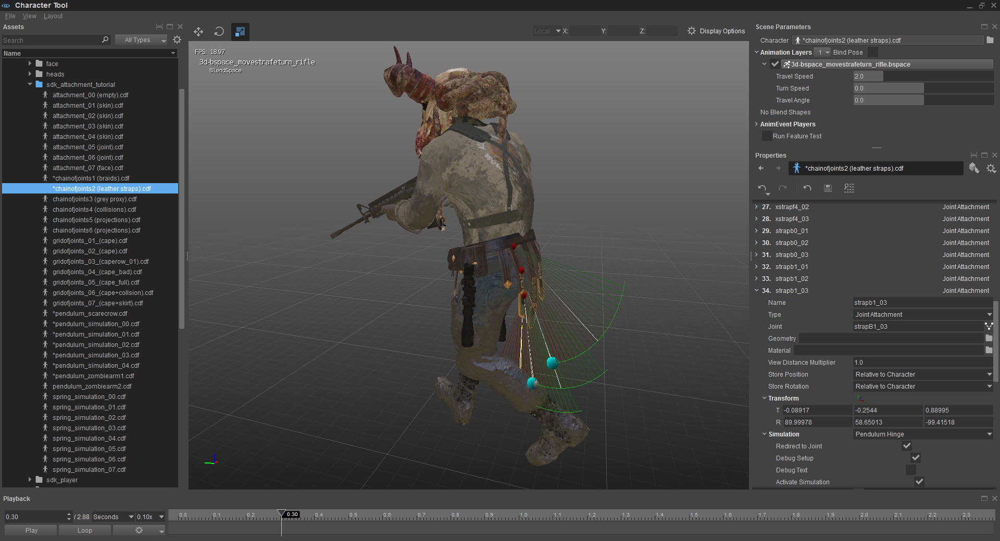
Такая веревка называется «псевдоверевкой» или «маятниковой веревкой», но такая конструкция не ведет себя как настоящая веревка; родительские суставы могут передавать движение только дочерним суставам, но дочерние суставы не влияют на движение родительского сустава (с настоящими веревками передача момента осуществляется в обоих направлениях). В целом, это простой и быстрый метод добавления моделирования к связанным соединениям, и при правильном сочетании параметров он может быть визуально очень близок к поведению реальных канатов. Мы также можем объединить пружины в одну цепь и определить ограничения для каждого звена индивидуально. Основная проблема этой конструкции заключается в том, что косы и кожаные ремни всегда проходят сквозь тело. Поиск решения этой проблемы – тема следующего раздела.
Использование обнаружения и реагирования на столкновения
Система прикреплений поддерживает простую систему обработки столкновений моделируемых объектов с телом персонажа. Первым шагом является правильная настройка прокси коллизий на теле. «Прокси-сервер столкновения» — это объект, который используется для аппроксимации частей человеческого тела, таких как; ноги и туловище простой геометрической формы. Использование такого прокси-сервера более эффективно, чем выполнение всех необходимых вычислений, необходимых для обнаружения столкновений и реагирования на них с помощью полигональной сетки.
Геометрический объект в нашем случае называется пастилка который представлен четырьмя числами. Используя эти 4 числа, мы можем создавать точки, сферы, капсулы, отрезки линий, прямоугольники, прямоугольники, 2D-ромбы и 3D-ромбы. Это 8 различных фигур (и все, что между ними), которые управляются одним и тем же алгоритмом и внутренне представлены всего 4 числами.
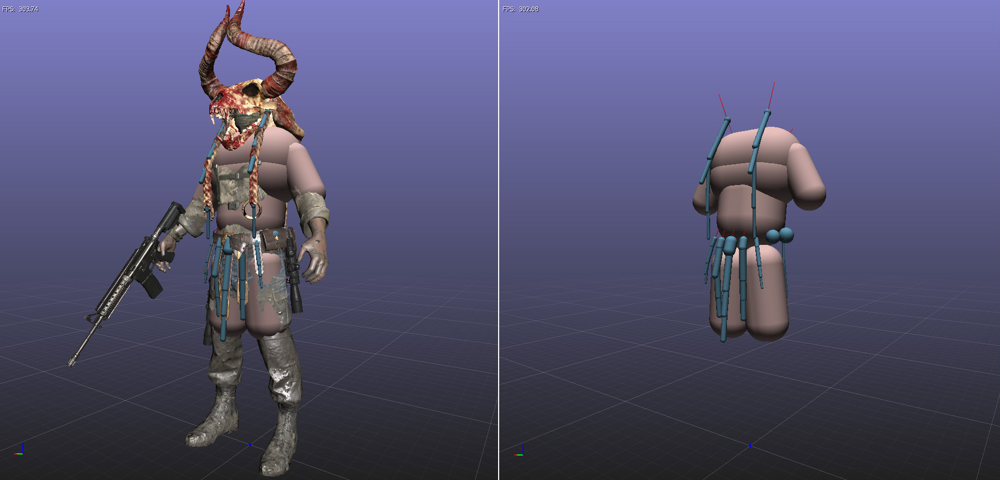
Для обнаружения столкновений и реагирования на живых персонажей мы используем два типа прокси, которые отображаются двумя цветами:
- розовые прокси (=ромбы) связаны с суставами, двигаются вместе со скелетом и представляют собой приближенную форму тела. Розовые прокси — это обычные вложения, за исключением того, что прикрепленный объект может быть только ромбом.
- синие прокси (=капсулы/сферы) являются свойством моделируемого сокета и обрабатывают обнаружение столкновений и реакцию с помощью розовых прокси. Синие прокси — это прокси динамических коллизий, что означает, что розовые прокси всегда отталкивают синие прокси. Примечание: Никогда не произойдет наоборот.
Настройка обоих типов прокси является интерактивной. Вы можете настроить размер, форму и все физические параметры во время анимации и сразу увидеть эффект на экране.
Установка пастилок
Перейти к Параметры отображения -> Вторичная анимация и включить Динамические прокси (синие) и Вспомогательные прокси (розовые):
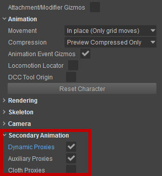
Чтобы установить розовые прокси (=ромбы) на персонаже, просто создайте новый сокет, дайте ему имя и установите тип прокси-приложение. Это активирует новую панель, где вы можете выбрать цель прокси (на данный момент только Вспомогательный поддерживается) и четыре ползунка для определения формы ромба. На снимках экрана ниже показана установка капсулы (это 1D-ромб на правой ножке).
Ромб определяется радиусом и тремя значениями масштабирования по осям. Оси будут масштабироваться в обоих направлениях системы координат, поэтому значение (0,1,1,1) создаст прямоугольник размером 2*2*2 метра. Радиус можно добавить поверх поля. Файл XML ChainOfJoints3 (серый прокси).cdf представляет собой пример того, как наносить леденцы на руки, ноги и верхнюю часть тела. Примечание: Обнаружение столкновений в этом файле не активировано.
Включение обнаружения столкновений
Обнаружение столкновений — это простой тест на перекрытие ромба и капсулы или сферы.
Чтобы включить обнаружение столкновений маятника, сначала необходимо настроить синие прокси. Однако, поскольку синие прокси связаны с различными типами моделирования, настройка является частью панели моделирования. Вот пример настройки hairstrand01_chain01:
- Розетка с имитацией маятника может иметь капсула для обнаружения столкновений. Один конец капсулы всегда соединен с гнездом крепления (поворотом), то есть менять можно только длина вдоль оси стержня и радиус
- Далее выберите Тип проекции, т.е. Вращение короткой дуги. Позже мы объясним, что это значит. Это активирует другой список под названием Доступные прокси-серверы столкновений
- Список под Доступные прокси-серверы столкновений показаны все розовые прокси (ромбы), которые на данный момент доступны для данной модели. Примечание: Конфликты между синими и розовыми прокси можно включать и отключать по мере необходимости. В нашем случае капсула для hairstrand01_chain01 расположен сзади, близко к голове, и может сталкиваться только с прокси в верхней части тела и руках (очень маловероятно, что он когда-либо сможет столкнуться с прокси на ногах). Вот почему мы выбираем только первые 5 прокси (все они расположены в верхней части тела) для обнаружения столкновений. Примечание: Коллизии проверяются в том порядке, в котором прокси появляются в списке, и чем меньше проверок необходимо, тем быстрее будет работать система.
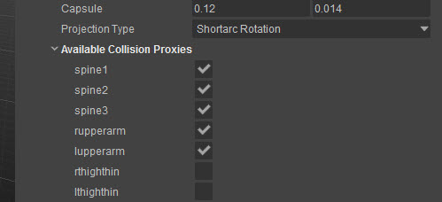
Реакция на столкновение
Чтобы справиться с реакцией на столкновение, мы используем метод, называемый проекция. Если капсула/сфера перекрывает пастилку, то мы просто спроецировать это пастилки. «Выступание» означает перемещение перекрывающейся капсулы/сферы как можно меньше и до тех пор, пока она не перестанет перекрываться с пастилкой. Это означает либо перемещение капсулы/сферы перпендикулярно к ближайшей поверхности столкновения, либо вращение капсулы из ромба.
Когда мы обнаруживаем перекрытие между леденцом и капсулой/сферой, мы используем один из 4 различных методов, чтобы спроецировать их обратно в неконфликтное состояние. Примечание: Не все 4 метода доступны одновременно, и то, какие методы доступны, зависит от конфигурации моделирования.
Весеннее моделирование
- Нет проекции: игнорируйте перекрытие и больше ничего не делайте.
- Короткий перевод: переводит сферу из ромба, используя кратчайший возможный перевод. В случае пружин поддерживается только сфера или ромб.
Моделирование маятника с конусом или полуконусом
- Нет проекции: игнорируйте перекрытие и больше ничего не делайте.
- Короткодуговое вращение: выверните капсулу из таблетки, используя как можно более короткий угол.
Моделирование маятника с шарнирной плоскостью
- Нет проекции: игнорируйте перекрытие и больше ничего не делайте.
- Короткодуговое вращение: выверните капсулу из пастилки в кратчайшем возможном направлении. В случае шарнирной плоскости существует только два способа выхода из ромба, поэтому система всегда выберет самый короткий из доступных путей.
- Направленное вращение: поверните капсулу из ромба, используя направление шарнирной плоскости. «Направленное вращение» означает, что существует только один способ вращения из ромба — вращение всегда происходит в «зеленом» направлении шарнирной плоскости.
В случае маятникового, короткодугового или направленного вращения вращение возможно только в том случае, если ось капсулы находится за пределами ромба. «Поворот» — это сферическая часть капсулы, соединенная с гнездом. Если эта часть капсулы окажется внутри пастилки, то на экране появится следующее предупреждение.
«Капсула для 'hairstrand01_chain01' запускается внутри прокси: 'spine3' (dist: 0,004)"
Всякий раз, когда появляется вышеуказанное сообщение, коллизия может быть устранена NOT, а капсула и пастилка останутся в перекрывающемся состоянии. Примечание: Капсула, ответственная за предупреждение, будет выделена красным цветом, чтобы сразу показать, где возникла проблема.
Эта проблема может возникнуть только при воспроизведении определенных анимаций, которые перемещают суставы неестественным образом. Однако в некоторых конфигурациях это может происходить постоянно, например, с передними ремнями при воспроизведении обычной анимации ходьбы. Вы можете увидеть этот эффект в ChainOfJoints4 (столкновения).cdf. Это, конечно, означает, что мы должны найти стратегии, позволяющие избежать таких недействительных состояний.
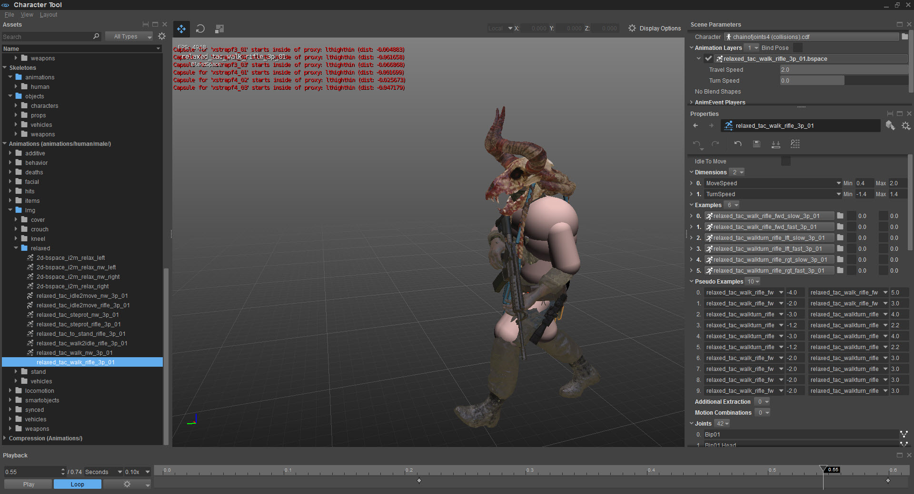
Трансляционные проекции
Мы только что упомянули, что для того, чтобы короткая дуга или направленное вращение работали, абсолютно важно, чтобы ось капсулы находилась за пределами ромба, однако во многих ситуациях это не так. Например, типичная проблема возникает со вторичной анимацией персонажей, где моделирование-обновить срабатывает после того, как анимация-обновить и бывает, что сама анимация перемещает прокси друг в друга или создает недопустимые конфигурации прокси, которые нарушают симуляцию. Очевидным решением в этом случае является проверка, находится ли корень веревки внутри одного из розовых прокси. Если да, то переместить его из рассматриваемого розового прокси.
Во-первых, создайте новый сокет и в том же суставе, где вы хотите выполнить перевод. Однако очень важно, чтобы новый сокет находился на тот же сустав и появится в списке вложений впереди маятниковое приспособление, которое вы хотите удалить (порядок прикреплений можно изменить непосредственно в Character Tool). Этот порядок определяет порядок выполнения, поэтому операция перевода перемещает сустав из прокси до того, как будет выполнено присоединение маятника.
В Моделирование выбор поля Трансляционная проекция. Это особый тип, который всегда совпадает с суставами, к которым он прикреплен. Также невозможно перемещать или вращать их с помощью гизмо, поскольку он может работать только с суставами и автоматически перенаправляется на тот сустав, к которому он прикреплен.
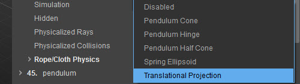
Откроется новая панель, которая позволит вам выбрать два метода поступательных проекций.
Шортвек Перевод: Для этого типа перевода можно указать только радиус сферы вокруг сустава. Если обнаружено перекрытие, переводим сферу из ромба по кратчайший вектор на поверхность. Этот тип перевода является самым простым, но он не лишен проблем. Например, предположим, что у вас есть установка с двумя пастилками, тогда возможно, что первый короткий сдвиг переместит капсулу из первой пастилки прямо во вторую пастилку. Затем вы проводите тестирование со второй пастилкой, в результате чего капсула возвращается обратно в первую пастилку. Эти проблемы весьма вероятны при сложных конфигурациях, когда многие ромбы расположены близко друг к другу и даже перекрываются (как в случае с нашим примером настройки туловища). Также может случиться так, что он проецируется в неправильном направлении и вызывает нежелательные «туннельные» эффекты. Поэтому рекомендуется использовать короткие переводы только для настроек с несколькими пастилками и там, где результаты предсказуемы.
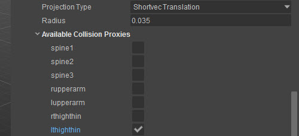
Режиссер Перевод: Результат направленного перевода легче предсказать, поскольку мы можем контролировать направление перевода.
Таким образом, мы можем либо определить ось перемещения, либо вывести капсулу из ромба в отрицательном направлении этой оси перемещения (= снимок экрана слева ниже). Примечание: Ось перемещения расположена относительно ориентации сустава и гнезда. Или мы можем выбрать сустав, который образует ось перемещения между местоположением сустава и гнездом (= правый снимок экрана ниже).
Оба случая позволяют указать капсулу в направлении оси трансляции, однако капсула всегда будет проецироваться в заданном направлении, даже если капсула находится «за» ромбом, что делает «туннелирование» очень маловероятным.
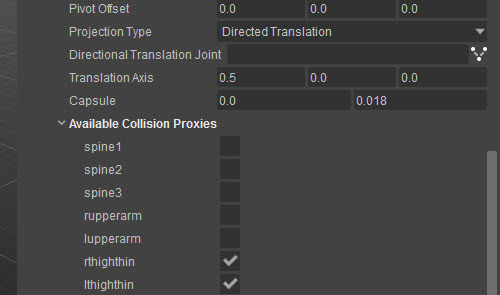 | 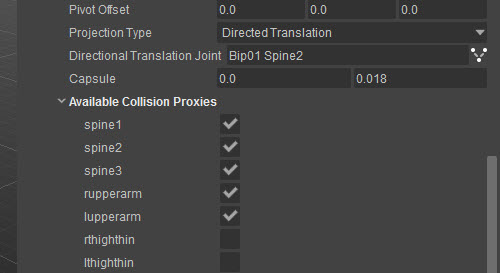 |
При использовании прокси-серверов коллизий система выполняет две последовательные проверки ограничений. Во-первых, он выбрасывает капсулу/сферу из ромба, а во-вторых, прижимает пружинную частицу или стержень маятника к форме ограничивающего объема.
После этих двух проверок мы ожидаем, что объект будет снаружи леденцов и внутри ограничивающего объема. Однако это не всегда возможно, и последнее слово остается за ограничивающим томом. Это связано с тем, что если он слишком мал, может случиться так, что система столкновений успешно разрешит столкновение, но ограничивающий объем вытолкнет капсулу/сферу обратно в пастилку. Другими словами, небольшой ограничивающий объем может запереть капсулу/сферу внутри пастилки.
Самый простой способ ознакомиться с этими функциями — загрузить примеры CDF и поэкспериментировать с настройками.
В ChainOfJoints5 (проекции).cdf вы можете найти пример настройки с правильным обнаружением столкновений и реакцией на 3 шнура и 5 кожаных ремней.
В ChainOfJoints6 (проекции).cdf есть более сложный пример с 28 физическими косами. Настройка в обоих файлах аналогична.
Примечание: За корень кос и кожаных ремешков подали в суд только «трансляционную проекцию». Длина каждой капсулы немного больше сустава и на 25% перекрывается с дочерней капсулой. Важно отметить, что радиус каждой дочерней капсулы примерно на 0,002 (=2 мм) меньше. С помощью этого простого трюка мы можем быть уверены, что если родительская капсула правильно выступит из таблетки, то ось дочерней капсулы также окажется снаружи.
Моделирование сетки связанных соединений
Это экспериментальная функция, которая находится в стадии разработки. Возможно, оно будет полностью изменено в будущих выпусках CRYENGINE.
Нам очень интересно услышать отзывы и предложения. Любые комментарии и предложения оставляйте на нашем форуме..
В предыдущих разделах мы объяснили, как настроить «цепочку связанных соединений» для имитации таких эффектов, как волосы и кожаные ремни. Это называлось «веревкой маятника». В этом разделе концепция расширена до «сетки связанных суставов»." и используется для имитации ткани — эта установка называется «ткань маятника». Это экспериментальный метод, в котором используется специальная установка маятника для моделирования ткани.
Основным преимуществом этого метода является управляемость и стабильность моделирования. В играх персонажам часто приходится выполнять множество различных физических движений, таких как перевороты на 180 градусов, мгновенная смена позы и телепортация из одной позиции в другую. Эти движения важны для отзывчивости игрового процесса, но весьма вероятно, что они помешают симуляции. С тканью маятника можно использовать специальные ограничения в моделировании, чтобы избежать типичных проблем, таких как туннелирование частиц (когда частицы ткани оказываются не на той стороне тела) и взрывы частиц (когда частицы вследствие импульса переходят в нестабильное состояние и не могут восстановиться). Кроме того, ткань маятника устраняет все растяжения по вертикальным осям, обеспечивает точный контроль изгиба ткани и устраняет необходимость решать сеть ограничений.
Базовая настройка
Ткань Pendula работает с суставами, и эта конкретная конфигурация суставов должна быть организована в сетке и с особым соглашением об именах. На снимке экрана ниже показано, как этот тип настройки используется для накидки с маятниками 13*11=143. Каждый маятник соединен с суставом, и вертикальные напряжения маятника идентичны шарнирным цепям, используемым для волос. В случае совместных решеток каждый маятник также горизонтально соединен со своим соседом (это показано красной линией), и это гарантирует, что веревки не отойдут слишком далеко друг от друга или слишком близко друг к другу.
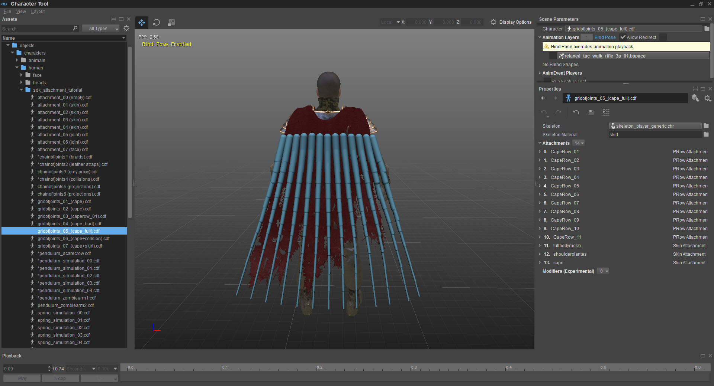
К устройству соединений предъявляются два требования.
Первое требование заключается в том, что каждое соединение должно иметь тег в начале своего имени (например, «cape_*», «skirt_*» или «coat_*»), а также счетчик x для горизонтального положения и счетчик y для положения y. Имя соединения для верхнего/левого соединения в этом примере — «cape_x00_y01».
Второе требование состоит в том, чтобы ось X каждого родительского соединения указывала в направлении дочернего соединения. В CharTool для этого есть автоматическая проверка. Следовательно, если ось X не указывает точно в направлении дочернего сустава, на экране появляется предупреждение, например: «Соединение 'cape_x12_y04' не выровнено по оси X». Также в месте соединения по умолчанию отображаются красная и зеленая линии, которые показывают, насколько велико несовпадение.
Невозможно отключить предупреждение о смещении — предупреждение будет очищено/удалено только после того, как пользователь устранит проблему с настройкой соединения.
Прикрепление кусочков ткани: Перезагрузите, например, один из первых CDF, созданных ранее. attachment_01 (скин).cdf и добавьте новое гнездо для крепления кожи. Сделайте это, нажав double на дереве слева. На панели свойств нажмите кнопку рядом с «Вложения» и выберите «Вложения». Вставить, это создаст новый пустой сокет. Введите произвольное имя, например «накидка», и установите тип. прикрепление кожи.
Далее переходим в геометрию и нажимаем на кнопку Папка и выберите «objects/characters/human/sdk_attachment_tutorial/romanarmor/cape.skin». Этот файл скина также расширит скелет. Поскольку накидка выглядит немного оторванной от тела, создайте еще один вложение скина и выберите файл "objects/characters/human/sdk_attachment_tutorial/romanarmor/shoulderplates.skin".
Эту настройку можно найти в GridOfJoints_01_(накидка).cdf. Персонаж в плаще и наплечниках должен выглядеть как персонаж на снимке экрана ниже. Накидка полностью жесткая; это потому, что на нем нет симуляции.
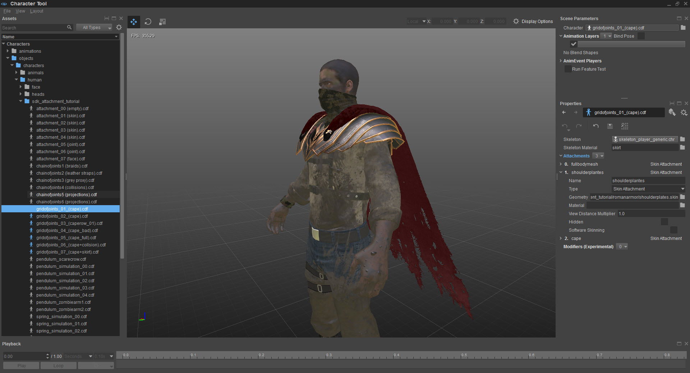
Активация моделирования: Загрузите CDF с именем GridOfJoints_01_(накидка).cdf. Сделайте это, double щелкнув по нему в дереве слева. Далее на панели свойств нажмите кнопку рядом с Вложения и выберите Вставить, это создаст новый пустой сокет (без имени). Введите произвольное имя, например «caperow_01».
Для этого сокета мы установим тип Приложение PROw. Название «PRow» означает «строка маятника». Это новый тип прикрепления, в котором сохраняются параметры моделирования только для всего ряда маятников. После того, как вы выбрали тип «PRrow Attachment», откроется новая панель (снимок экрана слева ниже). Эта панель во многом похожа на панель, используемую для настройки физических свойств маятника, с той лишь разницей, что каждый маятник подряд использует одни и те же параметры.
Последний шаг (прежде чем мы начнем настраивать параметры ткани) — выбрать маятник для ряда. Перейти к Строка JointName и нажмите на Совместное символ. Откроется окно, показывающее все соединения в иерархии. Выберите первый сустав в первом ряду накида; это называется "cape_x00_y01". Частью имени является счетчик «х00». Затем система автоматически выполнит поиск "cape_x00_y01", "cape_x01_y01", "cape_x02_y01", "cape_x12_y01". Этот процесс добавит все соответствующие имена соединений в строку маятников.
Наконец, измените Режим зажима чтобы Маятниковый конус. Если Настройка отладки теперь активирован, он отображает все 13 конусов в одном ряду.
Физические параметры строки маятника
Как упоминалось ранее, Приложение PROw представляет собой ряд маятника, а это означает, что (за некоторыми исключениями) физические параметры аналогичны маятнику. Если мы изменим одно значение на панели, то это значение будет применено ко всем маятникам в строке.
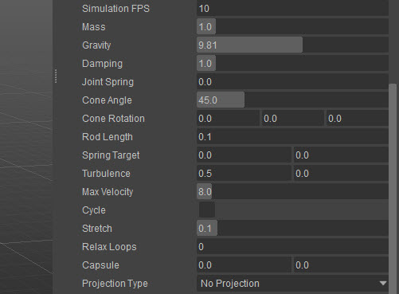
- Моделирование FPS: Этот ползунок определяет частоту кадров, с которой будет обновляться физическая симуляция. Можно выбрать значения от 10 до 255. В случае с тканью маятника выбранное значение на самом деле является реальным физическим обновлением в секунду. Более того, при фиксированной частоте кадров симуляция будет более детерминированной. Если выбрано значение по умолчанию 10, то на каждый кадр рендеринга будет не более 10 обновлений физики. Если разница между частотой кадров рендеринга и симуляции велика, то частота кадров симуляции может демонстрировать некоторое подтормаживание — такое подтормаживание может быть визуально очень неприятным. Поэтому рекомендуется установить частоту кадров моделирования в диапазоне от 30 до 60 кадров в секунду. Если в игре используется фиксированная частота кадров, то в идеале физика должна использовать ту же частоту кадров.
- Масса: Определяет массу качания маятника и long, как совместная пружина равен 0, то масса не влияет на период колебаний.
- Гравитация: Значение по умолчанию 9,81 м/сек. — стандартное ускорение падающих объектов под действием силы тяжести, действующей на Землю. Хотя масса боба не влияет на колебания маятника, сила тяжести влияет.
- Демпфирование: Это значение можно использовать для моделирования силы, зависящие от скорости, например сопротивление воздуха. Таким образом, чем быстрее движется объект, тем с большим трением воздуха он сталкивается. Это означает, что сила трения замедляет объект со скоростью, пропорциональной скорости, следовательно, более высокие значения демпфирования заставят колеблющиеся объекты быстрее остановиться.
- Совместная весна: Это значение можно использовать для моделирования силы, зависящие от положения, и представляет собой значение от 0 до 999, применяемое к сферическому суставу. Чем дальше маятник отклоняется от оси весенняя мишень, то тем сильнее он пытается вернуться. Значение 0 не оказывает пружинящего эффекта, поэтому в состоянии покоя маятник будет висеть вниз. Чем выше значение, тем быстрее боб колеблется и притягивается к Весенняя цель, который может указывать в любом направлении. Важно отметить, что натяжение пружины является силой, противодействующей массе и гравитации, и что более высокая масса всегда будет тянуть боб вниз.
- Угол конуса: Движение маятника можно ограничить тремя ограничивающими объемами: конусом, полуконусом и шарнирной плоскостью. Этот ползунок позволяет выбрать угол открытия конуса, полуконуса или шарнирной плоскости и по умолчанию установлен на 45 градусов. Доступен диапазон углов (0–179), а значения, превышающие 90 градусов, создают обратный конус.
- Вращение конуса: Обеспечивает вращение конуса, полуконуса и шарнирной плоскости относительно шарнира.
- Длина стержня: Определяет длину стержня. Длина стержня оказывает большое влияние на частоту качания маятника, поэтому чем длиннее стержень, тем больше времени потребуется маятнику на колебания вперед и назад.
- Весенняя цель: Параметры весенняя мишень и совместная пружина тесно связаны, и где целевой пружиной является ось относительно оси X сустава. Кроме того, в распоряжении пользователя имеются две плоскости вращения, которые позволяют целевой оси пружины вращаться вокруг оси моделирования – таким образом можно достичь любого положения как внутри, так и снаружи конуса, полуконуса или шарнирной плоскости.
- Турбулентность: Это модуляция значения демпфирования, основанная на скорости движения персонажа. Первое значение контролирует частоту, второе — амплитуду, а с помощью функции турбулентности к моделированию можно добавить тонкий шум для имитации таких элементов, как воздействие ветра на ткань.
- Максимальная скорость: Качание маятника может достигать очень высоких скоростей, особенно когда персонаж резко меняет позу или телепортируется из одного положения в другое. Ограничение скорости предотвращает появление больших импульсов, которые могут привести симуляцию в неконтролируемое состояние.
Решение горизонтальных ограничений
Ограничения — это ограничения и правила, которые можно добавить в симуляцию, чтобы контролировать/направлять частицы, куда они могут, а где нет. Одним из этих ограничений является обнаружение столкновений, которое можно использовать для предотвращения существования частиц внутри тела. Еще одним ограничением является контроль расстояния частиц друг от друга. В случае ткани каждая частица имеет вертикальное и горизонтальное расстояние, а в случае ткани маятника вертикальное расстояние ограничено расстоянием между родительским и дочерним суставами. Наконец, горизонталь контролируется следующими тремя параметрами:
- Цикл: Ткань Pendula работает на основе соединения, имеющего прямоугольную решетчатую структуру. В случае с накидками и пальто левая и правая стороны сетки не соединяются друг с другом. Однако в случае с юбками все маятники необходимо соединить по горизонтальной оси. Активировав Цикл установите флажок: последнее соединение в строке соединяется с первым соединением в строке. Следовательно, ряд на самом деле представляет собой круг маятников.
- Растянуть: Это значение используется для определения сколько ткань может растягиваться по горизонтали. Значение 0 (в сочетании с высоким значением для «Петли релаксации») обеспечивает фиксированное горизонтальное расстояние между маятниками. Значение 0,2 означает, что расстояние может растягиваться или уменьшаться на 20%. Горизонтальное «расстояние по умолчанию» — это расстояние между суставами в позе по умолчанию.
- Петли релаксации: В этом методе используется итеративный подход, позволяющий удерживать маятники вместе и в горизонтальном ряду. Каждая итерация сближает их, и это происходит в каждом кадре. В большинстве случаев рекомендуется значение 2–4.
Обнаружение столкновений и реагирование на них
Для обнаружения столкновений и реагирования между тканью и телом мы снова используем комбинацию розовых и синих прокси.
- розовый прокси (=ромбы) связаны с суставами, движутся вместе со скелетом и представляют собой приближенную форму тела.
- синие прокси (=капсулы/сферы) напрямую связаны с суставом и обрабатывают обнаружение столкновений и реагирование на них с помощью розовый прокси. розовый прокси всегда отталкивают синие прокси.
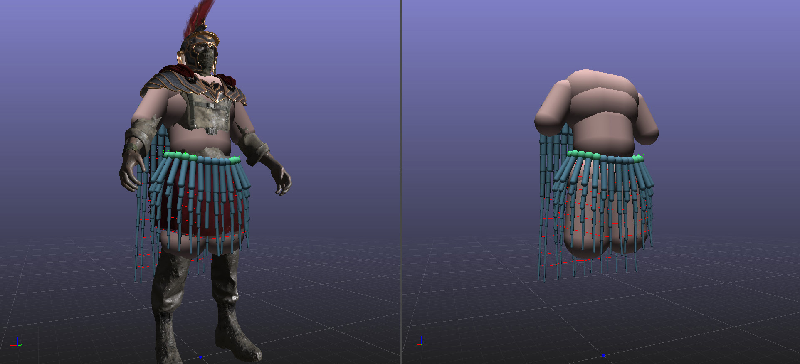
Капсула
Обнаружение столкновений — это простой тест на перекрытие ромба и капсулы или сферы. Чтобы включить обнаружение столкновений для строки маятника, синие прокси сначала необходимо настроить. Каждый сустав в ряду маятника может иметь Капсула для обнаружения столкновений и один конец капсулы всегда соединен с шарниром (поворотом), это означает, что вы можете изменить только длина вдоль оси стержня и радиуса. Изменение этих значений приведет к изменению капсулы для всей строки.
Тип проекции
Если вы выберете Тип проекции, он активирует список для Доступные прокси-серверы столкновений. Эти прокси применяются для всего ряда капсул. Реакция на столкновение была описана в предыдущем разделе под Включение обнаружения столкновений.